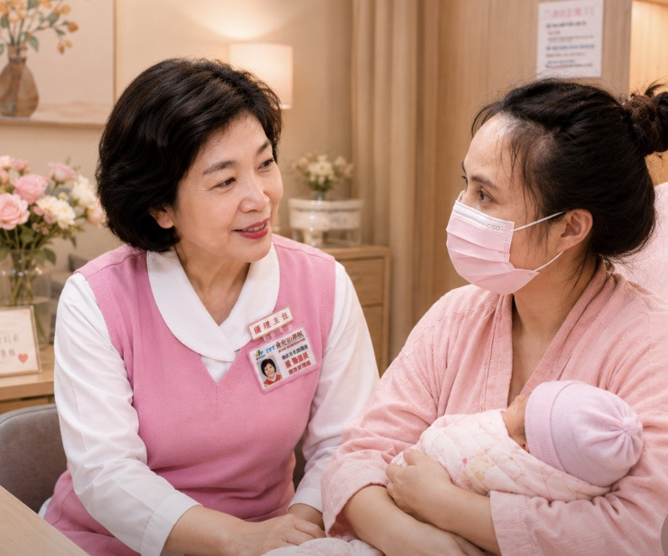

04
產後心情關懷
Postnatal Wellbeing Care
從第一聲心跳到第一道微笑，身心守護始終都在。

13
04
出院後不斷線 產後身心同行
產後心情關懷・以同理心安排訪視・母嬰親善・產後門診
Postnatal Care That Listens
當小生命降臨，妳的身份也從此刻定義。我們陪伴妳守護孩子，更陪伴妳修復自己；讓身體重拾節奏，讓心靈安放初衷。
在婦幼院區，母嬰親善從來不是另一種壓力。我們以媽媽和寶寶為核心，依每位媽媽的身心狀態、家庭支持條件，量身安排哺乳、親子同室與休息節奏──讓每一個選擇，都是被理解、被支持的選擇。
產後照護不是媽媽出院後才開始，而是從待產、生產、出院準備到返家後追蹤的連續支持。照顧好母親，就是照顧整個家庭的起點。
Postnatal care is a continuum, not a discharge — we walk every mother home, then keep walking with her.
•
產後心情關懷
住院期間以溫柔對談關心媽媽的心理狀態，有需要時即早銜接專業心理支持
•
以同理心安排訪視
出院後依媽媽狀況，安排電話訪視或居家訪視，主動關心、不主動打擾
•
以媽媽寶寶為中心的母嬰親善
依每位媽媽的步調安排哺乳、彈性親子同室與新生兒照護指導；尊重選擇、不讓親善變壓力
•
產後門診與復健
產後身體復原、骨盆底功能評估與復健支持
14